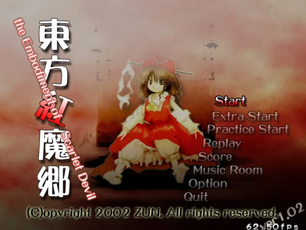
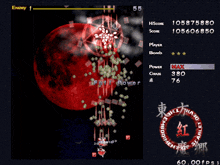
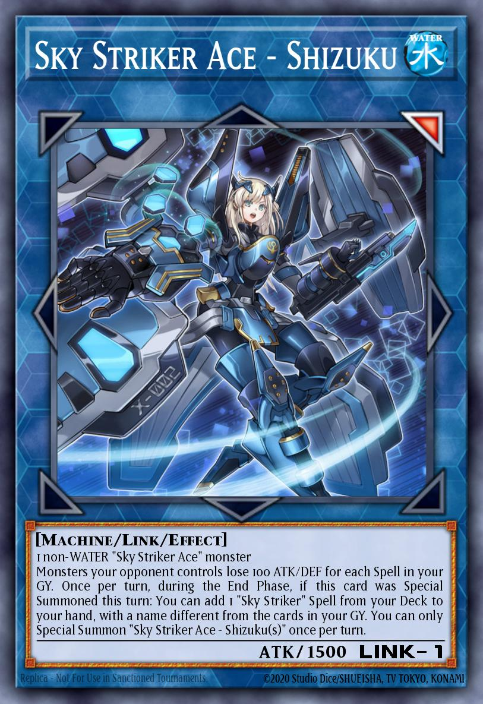
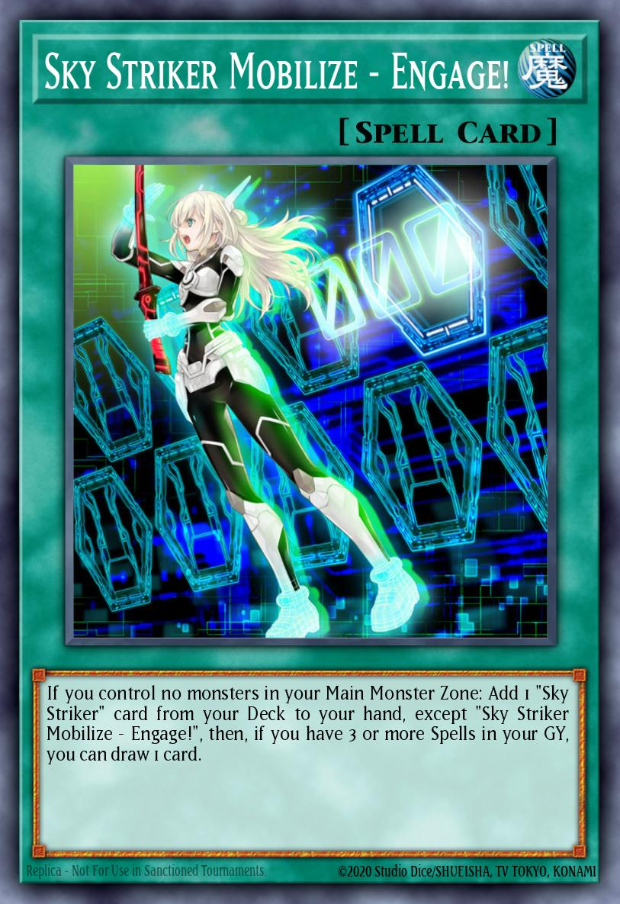
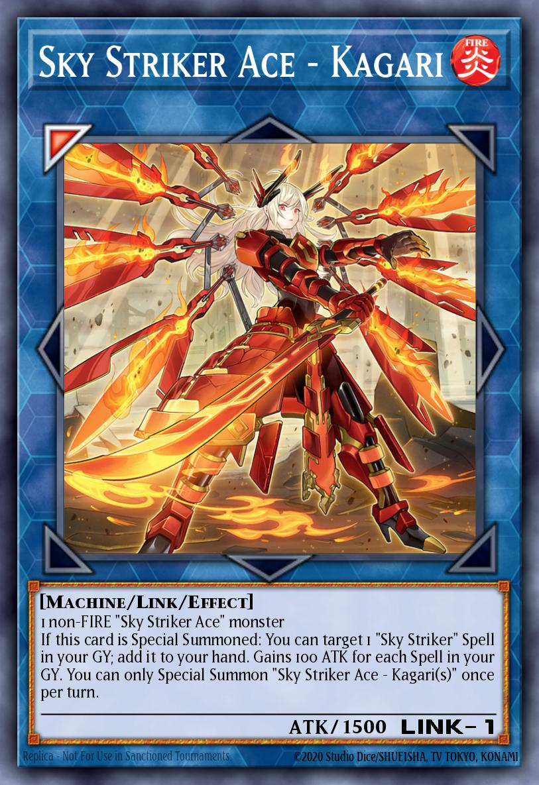

東方Project


東方Projectは、弾幕ゲームというジャンルで知られる日本のインディーゲームシリーズであり、複雑な弾幕パターンと高い難易度で有名です。プレイヤーは敵を攻撃しながら、画面いっぱいに広がる「弾の雨」を避け続ける必要があり、素早い反射神経、正確な操作、そしてパターンの記憶が求められます。
このシリーズはゲームそのものだけでなく、非常に活発なファン文化によっても大きな人気を得ました。ファンによって制作される二次創作（同人）は非常に多く、リミックス音楽、アニメーション、漫画、さらにはファンゲームまで幅広く展開されています。 公式作品は30作以上存在し、そのほとんどがシリーズの生みの親であるZUNによって開発されています。
遊戯王：閃刀姫（スカイ・ストライカー）



遊戯王のトレーディングカードゲームに登場する「閃刀姫(スカイ・ストライカー)」は、SFアニメに強く影響を受けたビジュアルが特徴で、高度なテクノロジーと未来的なデザインが際立っています。
カードのイラストは、中心となるキャラクターであるレイを軸に展開され、さまざまな機械装甲を装備することで形態や機能が変化します。それぞれの形態は異なるビジュアルスタイルを持ちながらも、エネルギーの翼や発光エフェクト、デジタル的な演出といった共通要素が見られます。